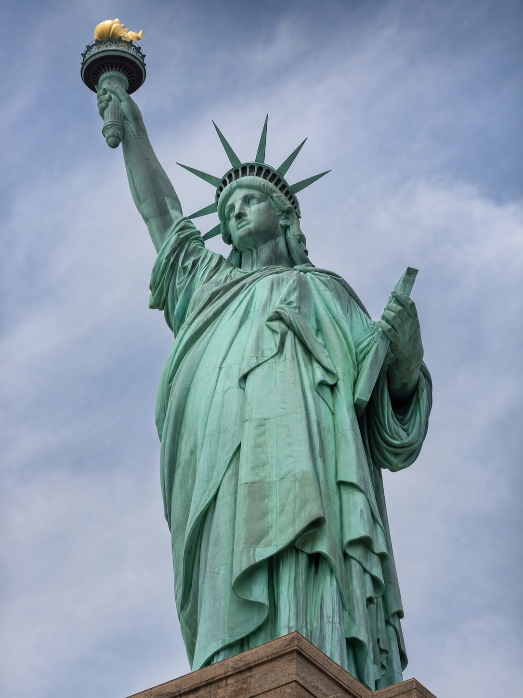

Como separar prova de lenda
A–D
Quatro graus de evidência aplicados a cada afirmação do relatório.
| A | Documento primário ou registro institucional direto |
| B | Historiografia consolidada, com base documental |
| C | Indício forte ou interpretação plausível, sem prova direta |
| D | Tradição interna ou lenda conspiratória, sem base |
Regra de ouro: número de maçons em um evento não prova direção maçônica — prova densidade de rede.

Livro de assentos, séc. XIX · fotografia editorial
Eixo social e associativo
Antes de secreta,
uma associação civil
Socorro mútuo, escolas, hospitais e clubes — numa época em que a sociedade civil ainda não existia como a conhecemos.
Mutualismo
Doentes, viúvas, órfãos, bibliotecas.
Abolicionismo
1871, 1885, 1888: direção maçônica expressiva.
Recrutamento
A oficialidade do Exército como viveiro de lojas.
Face conservadora
A mesma rede apoia o golpe de 1964.
Registro de socorros mútuos · fotografia editorial
Eixo cultural, simbólico e de imprensa
1734
Franklin publica as Constituições na Filadélfia: a imprensa entra na ordem.

Três máquinas de opinião
Il Risorgimento · A República · A Cidade do Rio
Cavour (1847), Quintino Bocaiúva (1870) e José do Patrocínio (1887).
A “Marselhesa composta em loja” é versão repetida, sem prova documental.
Pedra fundamental, rito e nação
Três monumentos, três vínculos

Monumento a Washington · 1848–1885
Pedra fundamental em rito maçônico; 22 pedras maçônicas no interior; 250 lojas doadoras.

Estátua da Liberdade · 1884–1886
Bartholdi, Loja Alsácia-Lorena; pedestal lançado em cerimônia maçônica em Nova York.
Praça XV e Paço Imperial · Rio
Fico, aclamação e Lei Áurea; o Palácio do Lavradio foi sede do GOB de 1842 a 1978.
Cerimônia ≠ código. O rito público de pedra fundamental explica a fama — não um segredo.
Marco nacional ≠ monumento maçônico. Praça XV e Paço Imperial são patrimônio brasileiro.